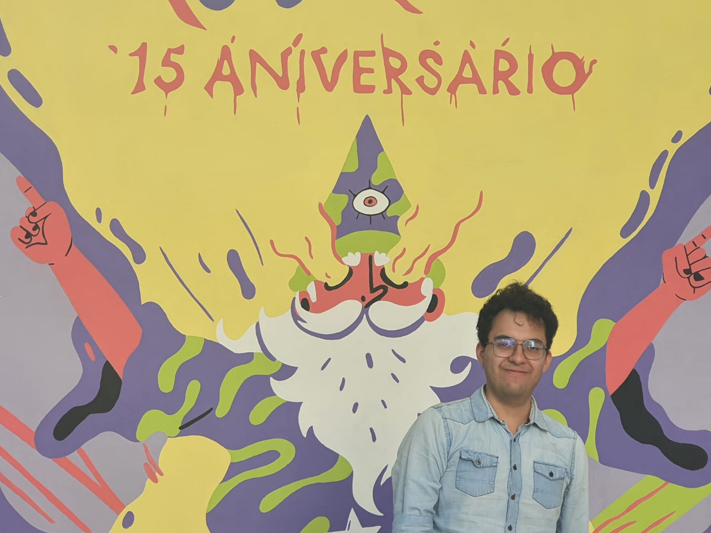

Hi, I'm Braulio Castro
I'm a maker, tech enthusiast, I want to make cool stuff. I love building things, learning from the best and different places, sharing what I come across.

About Me
I am a maker, tech enthusiast, and love 3D printing and programming.
Books I like
- After Steve - Tripp Mickle
- Steve Jobs biography - Walter Isaacson
- Founders at Work - Jessica Livingston
- The Psychology of Money - Morgan Housel
- iWoz - Steve Wozniak
- Hackers and Painters - Paul Graham
- Buy Back Your Time - Dan Martell
- Creative Inc - Ed Catmull
- The Innovators - Walter Isaacson
Essays
My path in life I am what I am Learning from different places Doing what I can Searching forwhat I love trying diferen things
Hobbies
I am mainly learning to progrma, trying to understadn AI, to understand the world that we live in, to understand people, to see how cool and different everything is